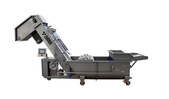
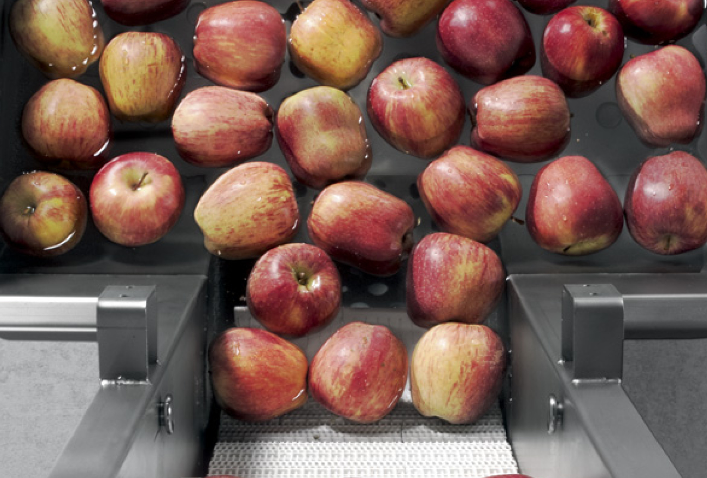
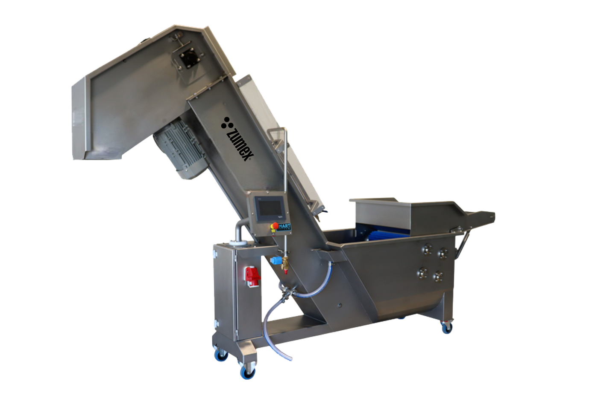

Průmyslové
ZWM
Od mytí k drcení.
Kombinované jednotky propojují mytí, transport a drcení ovoce před lisováním. Zjednodušují přípravu surovin v profesionální výrobě.
Poptat tento produktCenu a dostupnost vám potvrdíme podle konfigurace.
ZWM 1500Model
ZWM 3000Model
3 krokyMytí, transport, drcení
Navržen pro váš provoz.
ZWM propojuje mytí, dopravu a drcení ovoce v jedné sestavě. Připravuje surovinu pro navazující lisování za studena a pomáhá zkrátit manipulaci mezi jednotlivými výrobními operacemi.
Nerezový systém s kartáči a mlýnem je dostupný ve velikostech ZWM 1500 a 3000. Volba závisí na výkonu lisu a požadovaném objemu zpracování. Instalace zahrnuje vodu, odpad, elektřinu a stlačený vzduch.
Příprava surovin pro následné lisování.
Volba kapacity podle výrobní linky.


VYBERTE SI PROVEDENÍ
Jedna řada. Vaše konfigurace.
ZWM 1500
Výkon sestavy slaďte s lisem, aby se surovina před lisováním nehromadila. Před instalací ověříme dispozici prostoru a dostupnost přípojek.
Poptat variantuZWM 3000
Výkon sestavy slaďte s lisem, aby se surovina před lisováním nehromadila. Před instalací ověříme dispozici prostoru a dostupnost přípojek.
Poptat variantuFotografie jsou ilustrační pro danou řadu. Výbava a technické parametry se mohou lišit podle varianty.
PODROBNĚ A PŘEHLEDNĚ
Technické parametry.
- ZWM 1500 — kapacita
- 1 500–2 000 kg/h
- ZWM 3000 — kapacita
- 3 000 kg/h
- Příkon 1500 / 3000
- 4 / 5 kW
- Hmotnost 1500 / 3000
- 290 / 360 kg
- ZWM 1500 — rozměry dle výrobce
- 3 400 × 2 220 × 800 mm
- ZWM 3000 — rozměry dle výrobce
- 3 950 × 2 200 × 800 mm
- Napájení
- 200–480 V, 50–60 Hz
- Materiál
- Nerezová ocel
Údaje výrobce pro uvedené provedení. Výkon závisí na surovině a konfiguraci. Zdroj: Zumex ↗
Co zvážit při výběru
Výkon sestavy slaďte s lisem, aby se surovina před lisováním nehromadila. Před instalací ověříme dispozici prostoru a dostupnost přípojek.
Probrat vhodnou konfiguraci ↗VŠE PODSTATNÉ PO RUCE
Technické podklady.
Podrobnosti, dostupné příslušenství a materiály výrobce.